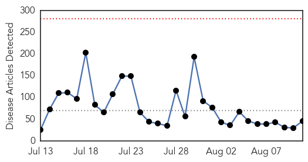

Unknown
30-Day Web Trend
0 alerts, 0 warnings

30-Day Twitter Trend
6 alerts, 1 warnings

Article Locations


Article Confidences

Top Articles:
- 0.972
- Why CNY is America's ground zero for EEE; 5 things to know about deadly virus
- 0.964
- “Possibility of Ebola spreading to India is low”
- 0.917
- Chicago Tribune
- 0.910
- The world windows to Thailand
- 0.866
- W.African Ebola outbreak death toll reaches 1,013
- 0.866
- Obama speaks to Ukraine's Poroshenko, White House says
- 0.866
- Putin tells EU's Barroso Russia coordinating aid convoy to Ukraine
- 0.866
- New PM Abadi calls on Iraqis to unite against raging Sunni insurgency
- 0.866
- Ukraine rebel leader says mulls counter attack
- 0.866
- Ukraine government loses 568 forces in rebel fighting
- 0.866
- Islamic State defeats Kurds in town of Jalawla northeast of Baghdad
- 0.866
- Shell hits prison in Ukraine's Donetsk, one inmate killed -city council
- 0.866
- Riot erupts over police shooting of unarmed black teen in Missouri
- 0.866
- Pro-Maliki Shi'ite militias step up Baghdad patrols after his speech
- 0.866
- Obama to make statement on Iraq -White House
- 0.854
- Another Nigerian nurse tests positive for Ebola
- 0.790
- UNICEF-Sierra Leone Ebola Virus Disease Weekly update (3-10 August 2014) - Sierra Leone
- 0.756
- Health scare in dialysis unit
- 0.755
- KRNV, Reno, NV
- 0.755
- KRNV, Reno, NV
- 0.752
- Polio cases in Peshawar, Punjab linked to Karachi
- 0.741
- MERS Outbreak Shows Weakness of Saudi Arabia’s Public Health System
- 0.702
- Health, science links in disaster readiness
- 0.698
- Emergency Supplies Reaching Health Facilities in Philippines - Philippines
- 0.669
- Bengal districts have no entomologists
- 0.661
- Wildlife officials airdrop oral rabies vaccine in Aroostook County through Aug. 18 — Aroostook — Bangor Daily News — BDN Maine
- 0.658
- Polio Vaccination Efforts Begin in Conflict-Torn Iraq
- 0.630
- Fighting polio in 2014: Pakistan fares worse than most impoverished nations
- 0.629
- NI health minister sees 'merit' in A&E fees for drunk patients
- 0.627
- Onondaga County resident diagnosed with potentially deadly EEE virus
- 0.584
- Alberta sees increase in cases of drug-resistant tuberculosis, report finds
- 0.549
- FBI probes death of unarmed black teen killed by Missouri police
- 0.549
- Actor Robin Williams found dead in apparent suicide
- 0.549
- Video: Easing the trauma for Gaza’s children
- 0.549
- Paris urges lovers to swap ‘love locks’ for 'selfies'
- 0.549
- More than 100 escape after shelling of Donetsk prison
- 0.549
- Pressure mounts on Iraq's Maliki amid political turmoil
- 0.549
- Israeli negotiators arrive in Cairo as Gaza truce holds
- 0.549
- Maliki defiant as Iraqi president names new PM
- 0.549
- French military effort against ISIS ‘should focus on Lebanon’
- 0.549
- Founder of Paris’s iconic Berthillon ice-cream shop dies
- 0.549
- Clinton blames Obama’s Syria policy for rise of ISIS
- 0.549
- Barroso warns Russia over aid mission to east Ukraine
- 0.544
- UAE hospitals urged to curb post-surgery infections
- 0.544
- Tick Bite May Cause Meat Allergy
- 0.504
- New case of African swine fever appears in Poland farms - Livestock - Agri.eu
Top Tweets:
- 0.857
- RT: >20000 lab confirmed flu cases; Australia is in flu season and vaccination now can protect you soon! fluishere http://t.c…
- 0.571
- RT: @fluspecialist talks flu & how you can protect yourself your kids & colleagues from this wintry respiratory virus https://t…
- 0.554
- RT: A person can incubate the virus without symptoms for 2-21 days the average being 5-8 days before becoming ill…
- 0.554
- RT: "A person can incubate the virus without symptoms for 2-21 days the average being 5-8 days before becoming ill…
- 0.529
- RT: "@taiwooloko: @owenmp The trainings in BSL-4 are absolutely neccesary for us to contain this outbreak." Eb…